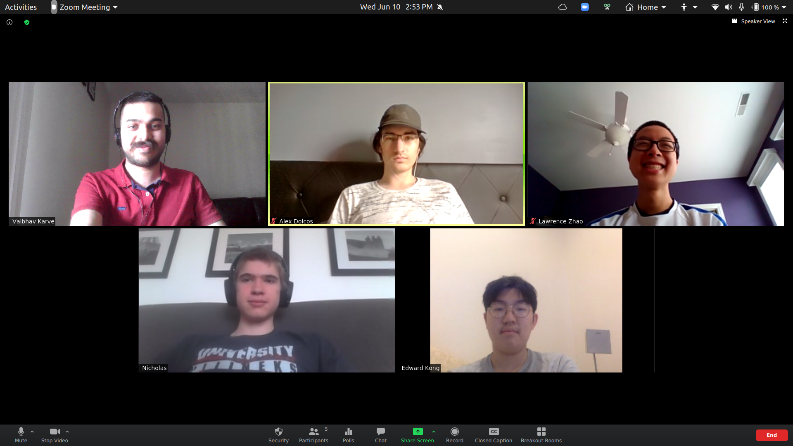

Axiomatic Geometry in Lean
Home
Table of Contents
This project was titled Interactive theorem proving in Lean: teaching mathematics to a computer and ran as part of the Illinois Geometry Lab in Summer 2020. I was involved in running the project with 4 high-school students.
All the code generated during this project can be found at the GitHub code repository vaibhavkarve/leanteach2020. The project outcomes are summarized in the following final poster, project report and presentation slides.
1 The team
- Me (Principal Investigator)
- Lawrence Zhao (Frankel scholar)
- Edward Kong (Frankel scholar)
- Alex Dolcos (Frankel scholar)
- Nicholas Phillips (Frankel scholar)

2 Project Goals
This project was code-named LeanTeach 2020.
2.1 Goal 0: Teach Lean to Humans
We met 9 hours per week to discuss math, philosophy and programming as it relates to formalizing mathematics in a theorem prover. We used Microsoft Research's Lean Theorem Prover and its Mathematical Library (mathlib) as our proof assistant for this. We all had experience programming in Python before this. We explored how things work differently in a purely functional language. We also learned about tactics in Lean. We used Slack for text-based communication, Zoom for video meetings and CoCalc for sharing and collaboratively editing code.
2.2 Goal 1: Teach Math to a Computer
The idea was that we can take a piece of familiar mathematics and translate it into code that is acceptable to Lean. Lean already understands basic logic and does not accept incorrect mathematics as input. We wanted to choose a topic in mathematics that,
- is known to us with a high degree of familiarity – because intuition comes in handy when we are stuck in a Math → Lean translation,
- is preferably already in an axiomatic form – we wanted to follow the workflow of Definitions → Axioms/Postulates → Propositions/Theorems,
- is not already in mathlib – this ruled out group theory, number theory, category theory…
We settled on formalizing Axiomatic Geometry of three types:
- Euclid's axioms
- Hilbert's axioms
- Tarski's axioms
3 Outcomes and links
Throughout the duration of the project, we create extensive notes on everything we learned, any problems we encountered and all the approaches we tried when attempting to solve those problems. These notes were collected in the form of a project wiki that is hosted at IllinoisWiki LeanTeach 2020. This wiki serves as a lab-notebook + documentation.
I-STEM education initiative featured a news article that mentioned our project – Uni high students experience math research during IGL’s summer program.
Below is a video recording of the project being presented as part of the IGL open house.
Below is a talk I gave at the LeanTogether 2021 conference.